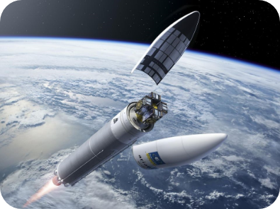
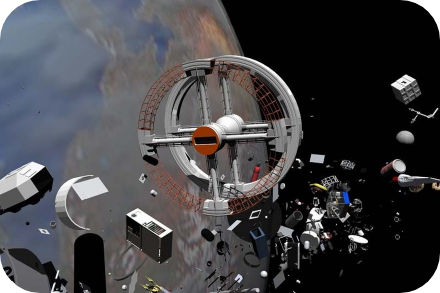

Pollution terrestre
Pollution spatiale
Pollution planétaire
Pollution terrestre
Pollution spatiale
Pollution planétaire
Les débris gravitant autour de la Terre représentent un risque important pour les satellites encore actifs en orbite, en effet on dénombre actuellement 23 000 débris de la taille d'une balle le de baseball, 500 000 objets d’un centimètre et un milliard d’objets d’une taille inférieur, sachant qu’une balle d’aluminium de 7,5mm gravitant autour de la terre serait capable de percer les boucliers de l’ISS. Il y a donc un besoin d’agir urgent puisque à terme certaines zones deviendraient inexploitables à cause du trop grand risque de collisions entre les débris ; on appelle cela le syndrome de Kessler.
Les lancements spatiaux
Observez vous-même
Une expérience en réalité virtuelle
Les nombreux lancements spatiaux développent non seulement une pollution dans l'espace mais aussi sur Terre.
Cette pollution est notamment liée aux matériaux utilisés lors des lancements, les plus polluants sont les ergols, situés dans les lanceurs, ils sont utilisés comme carburant.
Lors des lancements des satellites ou fusées on peut observer une épaisse fumée qui s'échappe des lanceurs. Cette fumée est constituée d'éléments chimiques formés lors de la combustion de l'ergol liquide.
De nombreux gaz se dissipent dans l'atmosphère lors des lancements augmentant le phénomène de couche d'ozone
Les débris
La pollution de la terre par les activités aérospatiales est aussi due aux retombées de débris dans l'atmosphère. À chaque lancement spatial de nombreux éléments chimiques se détachent de l'engin avant qu'il ne soit bien positionné en orbite dans l'espace et une fois à son emplacement certains débris retombent dans l'atmosphère et viennent polluer notre atmosphère et la Terre. .
Pour envoyer un objet en orbite on utilise des fusées qui au fur et à mesure du trajet vont se détacher pour permettre la mise en orbite de l'objet dans l'espace. Les différentes phases de largage des différents espaces d'une fusée polluent l'environnement car certains composants radioactifs retombent directement dans les océans où les déserts et sont laissés à l'abandon.
La situation est la même pour les débris en fin de vie dans l'espace, à partir d'un certain temps ils quittent leur orbite pour retomber sur Terre, heureusement l'atmosphère permet de les ralentir et les désintègre mais seulement en partie
 Le projet Falcon 9
Afin de pallier cette pollution de notre environnement certaines entreprises privées comme SpaceX proposent de nouveaux systèmes réutilisables comme le projet Falcon 9 qui consiste à ce que le première étage de la fusée ne retombe pas dans l'atmosphère mais atterrisse sur une plateforme et ainsi puisse être réutilisée Elon Musk, une centaine de fois bien que cette dernière aurait besoin d'une maintenance tous les dix vols. .
Si ce projet venait à fonctionner le nombre de débris radioactifs dans l'atmosphère ou en orbite pourrait considérablement diminuer. Le coût financier des lancements spatiaux est très élevé et d'un point de vue économique le fait de pouvoir réutiliser différents éléments des fusées peut être vraiment positif pour l'économie.